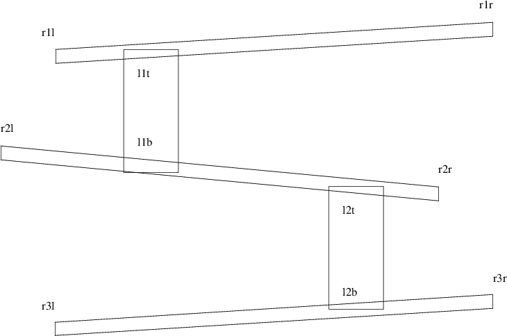

map = { "r3l-0": None, # up
"r3l-1": ["r3r", ["l2b"]], # right
"r3l-2": None, # down
"r3l-3": ["d3", []], # left
...
"r3r-0": ["r2r", []], # up
"r3r-1": None, # right
"r3r-2": None, # down
"r3r-3": ["r3l", ["l2b"]], # left
"r2r-0": None, # up
"r2r-1": None, # right
"r2r-2": ["r3r", []], # down
"r2r-3": ["r2l", ["l2t", "l1b"]], # left
"r2l-0": ["r1l", []], # up
"r2l-1": ["r2r", ["l2t", "l1b"]], # right
"r2l-2": None, # down
"r2l-3": None, # left
max_speed = 50
step_horizontal = 30
step_vertical = 20
M = None
stand_left, stand_right, jump_left, jump_right, up_left, up_right = range (6)
mario_actions = [stand_left, stand_right, jump_left, jump_right, up_left, up_right]
action_image_names = ["mario-stand-l.png", "mario-stand-r.png",
"mario-jump-l.png", "mario-jump-r.png",
"mario-up-l.png", "mario-up-r.png"]
class mario (pygame.sprite.Sprite):
image = None
def __init__ (self, o, d, startpos, path):
pygame.sprite.Sprite.__init__(self)
mario.image = pygame.image.load (barrel_colour()).convert_alpha ()
self.images = []
self.orientation = o
for i in mario_actions:
self.images += [pygame.image.load (action_image_names[i]).convert_alpha ()]
self.image_height = 0
self.image_width = 0
self._change (d)
self.rect = self.image.get_rect()
self.newpath = path
startpos = self.adjust (startpos)
self.route = bres.walk_along (startpos, startpos)
self.curpos = self.route.get_next ()
self.rect.topleft = self.curpos
self.next_update_time = 0
self.Xspeed = 0
self.direction = None
self.path = None
self.pathname = None
def new_goal (self, d):
print "new_goal says our newpath is", self.newpath
self.pathname = "%s-%d" % (self.newpath, d)
print "Mario is using path", self.pathname,
path = map[self.pathname]
print " =", path
if path == None:
print "no path to walk along"
self.route = bres.walk_along (self.curpos, self.curpos)
else:
print "newpath =", self.newpath
self.path = self.newpath
self.newpath = path[0]
print "path =", self.path, "newpath =", self.newpath
endpos = self.adjust (points[self.newpath])
self.route = bres.walk_along (self.curpos, endpos)
self.direction = d
def on_ladder (self):
if self.pathname != None:
path = map[self.pathname]
if path != None:
for l in path[1]:
print l
if self.is_on (points[l][0]):
return True, l
return False, self.newpath
def go (self, k):
if k == K_RIGHT:
self._horizontal (1, stand_right)
elif k == K_LEFT:
self._horizontal (3, stand_left)
elif k == K_UP:
self._vertical (0, up_right)
elif k == K_DOWN:
self._vertical (2, up_left)
def _horizontal (self, newdir, o):
if self.direction in [0, 2]:
# could be going up a ladder or between ramps at the end
if self.route.finished ():
# we have reached the end of the ladder or end of the up/down route
self.orientation = o
self._change (o)
self.next_update_time = 0
self.new_goal (newdir)
else:
if self.direction == newdir:
# same direction, just continue, faster
self.Xspeed = min (self.Xspeed + step_horizontal, max_speed)
else:
self.orientation = o
self._change (o)
self.next_update_time = 0
self.new_goal (newdir)
def _vertical (self, newdir, o):
if self.direction in [1, 3]:
# going left or right, check if we can use ladder
b, self.newpath = self.on_ladder ()
if b:
print "using a ladder", self.newpath
self.orientation = o
self._change (o)
self.next_update_time = 0
self.new_goal (newdir)
elif self.route.finished ():
# can also go up at the end of the ramp
self.orientation = o
self._change (o)
self.next_update_time = 0
self.new_goal (newdir)
else:
# already going up or down, might be on a ladder or end of a ramp
if self.direction == newdir:
# same direction, just continue, faster
self.Xspeed = min (self.Xspeed + step_vertical, max_speed)
else:
# change of direction
self.orientation = o
self._change (o)
self.next_update_time = 0
# check to see if already on ladder
if (self.pathname != None) and (self.pathname[0] == "l"):
# make new goal the previous start
self.newpath = self.path
self.new_goal (newdir)
else:
self.new_goal (newdir)
def _change (self, d):
self.image = self.images[d]
self.image_height = mario.image.get_height()
self.image_width = mario.image.get_width()
self.next_update_time = 0
def update (self, current_time):
if self.next_update_time < current_time:
if self.Xspeed > 0:
self.curpos = self.route.get_next ()
self.rect.topleft = self.curpos
self.Xspeed -= 1
self.next_update_time = current_time + 1
def adjust (self, p):
return [p[0], p[1]-self.image_height]
def is_on (self, x):
return not ((self.curpos[0] + self.image_width < x) or
(self.curpos[0] > x + xpos (ladder_width)))
def checkInput():
for event in pygame.event.get():
if event.type == KEYDOWN:
if event.key == K_ESCAPE:
sys.exit (0)
elif event.key in [K_RIGHT, K_LEFT, K_UP, K_DOWN]:
M.go (event.key)
elif event.key == K_f:
pygame.display.toggle_fullscreen()
def play_game (screen):
global M
o = -1
M = mario (stand_right, 1, points["r3l"], "r3l")
while True:
t = pygame.time.get_ticks()
if o != t:
activity_scheduler (t)
o = t
checkInput()
screen.fill(white) # blank the screen.
draw_polygons ()
for b in barrels:
b.update (t)
screen.blit (b.image, b.rect)
M.update (t)
screen.blit (M.image, M.rect)
pygame.display.flip ()
def mouse_hit (e):
global m
mouse = pge.pyg_to_unit_coord (e.pos)
if e.button == 1:
m.put_xvel (gb.get_xvel ()-0.3)
elif e.button == 3:
m.put_xvel (gb.get_xvel ()+0.3)
elif gb.moving_towards (mouse[0], mouse[1]):
pos = m.get_unit_coord ()
# print "mouse =", mouse, "ball =", pos
m.apply_impulse (pge.sub_coord (mouse, pos), 0.4)
else:
m.put_yvel (m.get_yvel ()+0.4)
pge.register_handler (mouse_hit, [MOUSEBUTTONDOWN])
def delete_me (o, e):
global blocks, winner, loser
blocks.remove (o)
o.rm ()
if blocks == []:
if not loser:
winner = True
pge.text (0.2, 0.3, "Winner", white, 100, 1)
pge.at_time (4.0, finish_game)
def box_of (pos, width, height, color):
global blocks
blocks += [pge.box (pos[0], pos[1], width, height, color)\
.fix ().on_collision (delete_me)]
This document was produced using groff-1.22.